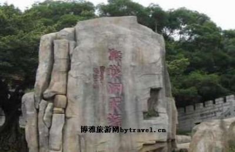

猴屿洞天岩，即福州市长乐区著名侨乡猴屿的屏山洞天岩，俗称猴屿岩，位于闽江口南岸最北端，距福州市区28公里。猴屿岩洞因岩叠洞胜为闽江一绝。
猴屿岩石奇岩怪，肖形状物，千姿百态。已发现的有：野猪、松鼠、河豚、海豹、玉兔、乌龟、壁虎、蜥蜴、鲤鱼、螃蟹、蛤蟆、老蛇、母鸡、鹦鹉、苍鹰、颓鹫、老虎、羔羊、白马、黄牛、鳄鱼、犀牛、虎爪、象耳、仙桃、西瓜、玉鼓、金钟、砚盆、笔架、书包、签筒、济公帽、金刚靴、状元帽、天仙履、老君卧榻、仙姑玉枕、孔明摇扇、织女抛梭、八戒仰眠、沙僧坐禅、三藏佛冠、佛祖袈裟……猴屿岩绿荫如盖，松、竹、榕、樟、兰、菊、紫薇、杜鹃、糃子、铁树、桂花、马英丹、美人蕉、黄心榕、白玉兰……层层叠叠，团团簇簇，外头天气再热，日火再大也失去威力。
